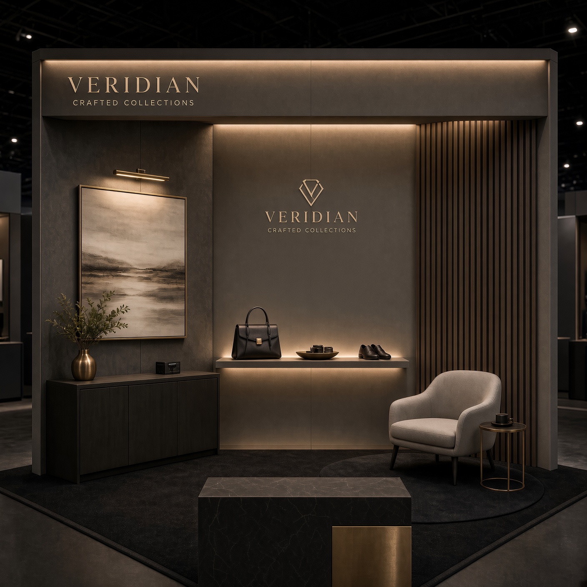
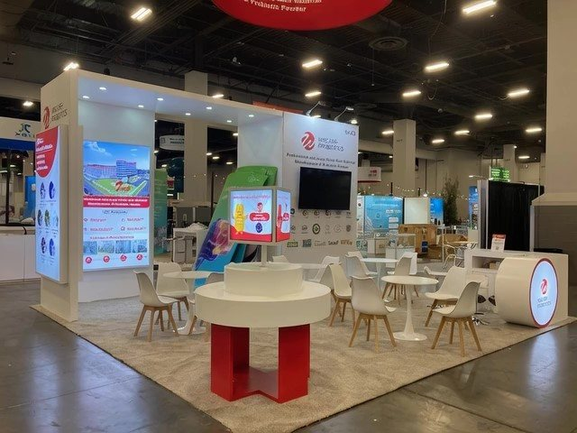
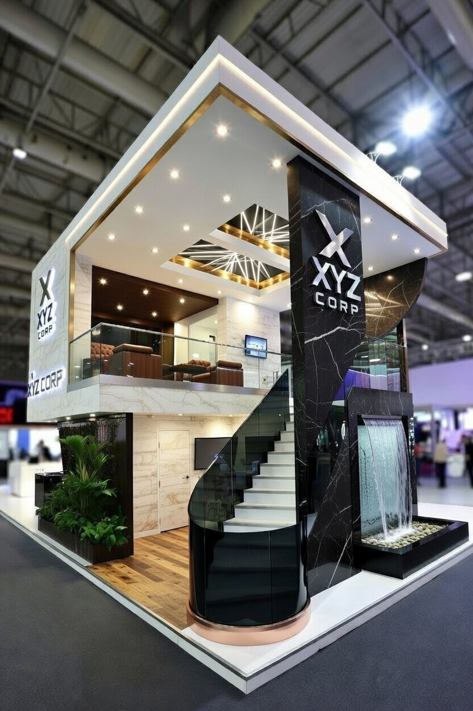

We Build For The Biggest Shows

From concept to installation—fully custom exhibits built for your vision

Standard booths ready to go — clean, modern and professionally finished. The fastest route to a show floor when the calendar is tight.

Existing structures reworked to your brand — custom graphics, lighting upgrades and layout changes. The sweet spot between budget and bespoke.

100% bespoke fabrication. Multi-story structures, interactive elements, integrated AV — engineered and built from a blank sheet.
Every discipline is ours, and every one of them answers to the same install date. Follow a build from first sketch to the crate coming home.
We listen to your goals, sketch concepts and refine until it's right — your brand story rendered in 3D before anything gets built.
The build comes to life in our Las Vegas shop. Precision carpentry, graphics production and quality checks at every stage.
Professional setup on-site. Our crews handle structure, graphics, lighting, AV integration and final staging.
We handle teardown and store your booth between shows — asset protection and logistics, all taken care of.
Plan ahead: major custom builds want at least 8 weeks lead time so we can hit your installation deadline with zero compromises.
Let's bring your trade show vision to life. From initial concept to installation day, we're with you every step of the way.